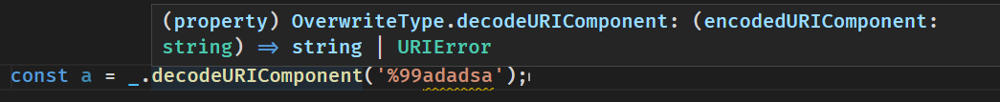
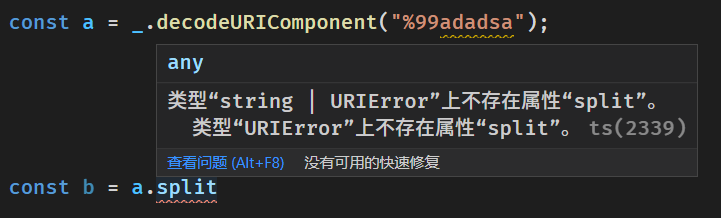

首页
ts_return_error
包装全局环境中的对象相关方法调用，从 throw 变成 return 并提供类型提示
github repo：
ts_return_error
你知道 js 中这些方法会 throw error 吗？
typescript
const a = decodeURIComponent('%99adadsa'); // 这里会 throw URIError
但我们在书写代码的时候，即便是在使用 typescript 的时候仍然无法知晓
decodeURIComponent
是不安全的，我们只有在阅读文档后才知道「噢，原来这里会报错啊」
ts_return_error
这个项目的目的就是让我们在编写代码的时候就有意的去防范这些本来难以预知的行为


使用方法
待完善。。。
typescript
console.log(_.JSON.parse("{}")); // out: Object { } console.log(_.JSON.parse("77{}")); // out:SyntaxError: JSON.parse console.log(_.decodeURIComponent("77{}")); // out:77{}
亟需解决的问题
现在相关类型是我手动填写的，而且还只写了两个，要想办法让他自动生成才好
扩展阅读
笔者提的关于先使用 @throws 提供一些提醒的建议
Expect to use @throws in lib/*.d.ts to mark which methods may throw err · Issue #43528 · microsoft/TypeScript (github.com)
社区关于抛出错误类型的讨论
Suggestion:
clause and typed catch clause · Issue #13219 · microsoft/TypeScript (github.com)
throws
ts return error: 突然有一个 #想法# ，对于 js 内置的方法和对象进行包装，使其从 throw err 变成 return err 这样能够提供对于错误的类型提醒
javascipt 可能会抛出异常的方法统计